Problem & Goals
Introducing Pizza Detection
Ever wonder if there is pizza in your immediate surroundings? Consider the scenario where you're at a party — you've had one too many libations and things start to get kinda fuzzy... is that pizza or seven layer dip in front of you? It can be hard to tell, right?! Or let's say you find yourself in a TGI Fridays (completely ironically of course) and order a 'BBQ Chicken Flatbread Pizza' and you ask yourself "but is this really pizza?". Maybe you are currently on an all pizza diet and you're just tired of constantly mentally assessing whether food items are pizza or not. Or maybe you just really love pizza and think it would be silly but fun to detect pizza from, well, photos of pizza.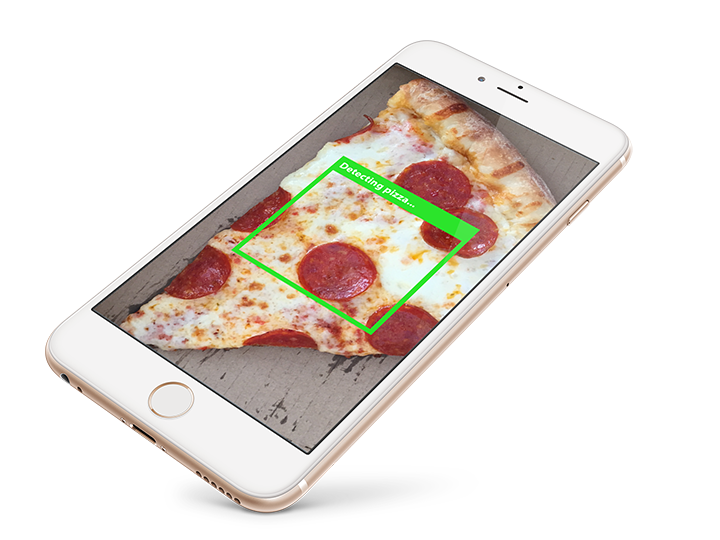
Okay but seriously...
Jokes aside, the actual goal of this project is to first create a tool that recognizes a specific food from a single image. A longer term goal would be to recognize many other foods and then ultimately predict calories and other nutritional info from a photo. The use cases for this are pretty self-explanatory — tracking food intake for weight loss or to manage medical conditions (ie diabetes, food allergies, etc) can be fairly labor intensive (and frankly annoying) as it usually requires manually entering nutritional info into a fitness/food tracking app. Because of this, most people don't stick with tracking their food intake for very long and this potentially can lead to weight gain and other health problems.Data Source
The images in the data source were downloaded from another image recognition project, The Food-101 Data Set, and incorporate additional images from yet another image recognition project, ImageNet. From these data sources, I create two sets of images — 2,000 images of pizza and 2,000 images of non pizza food items. Within each set, I use 1,600 images to "teach" the model what pizza looks like and then use the other 400 unseen images to test whether the model has in fact learned what pizza looks like.
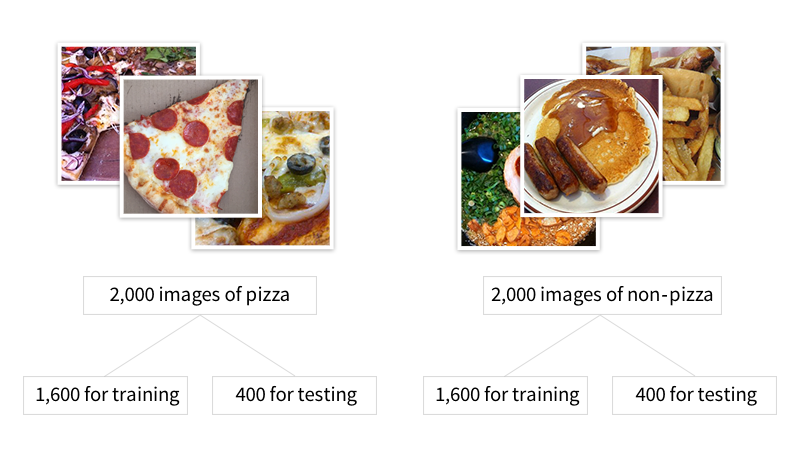Data Cleaning & Manipulation
Because the data is all image based in the form of pixels (which are the smallest unit of information that make up an image on a digital display), the concept of "cleaning" the data isn't really applicable. I do adjust for differences in lighting and resize all the images to have the same dimensions. I also explore aspects of color in the pizza versus non pizza images. This required some data manipulation to extract the information in the pixels of the images.
Exploratory Data Analysis
Below I explore the relationship between color, hue, saturation, and brightness in the pizza versus non pizza images.
RGB color space
Color images displayed on digital devices are made of up of three colors — red, green, and blue. Every pixel in an image will consist of each color in some proportion to make up millions of different color combinations. For example, looking at the image of pizza below, the image can be separated into its red, green, and blue color components.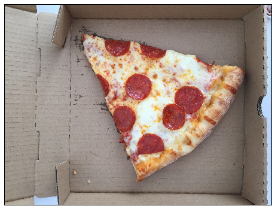
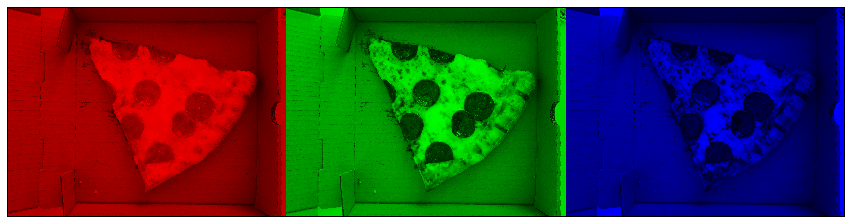
To see if color is a good predictor of pizza, I looked at the red, green, and blue color components of all the pizza images versus all the non pizza images. Seeing as the plots below look nearly identical, it's fair to say color is not a good predictor of pizza.
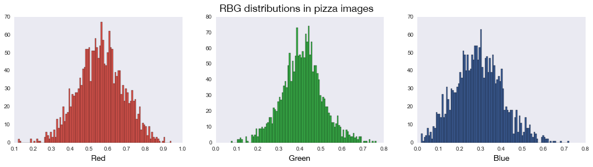
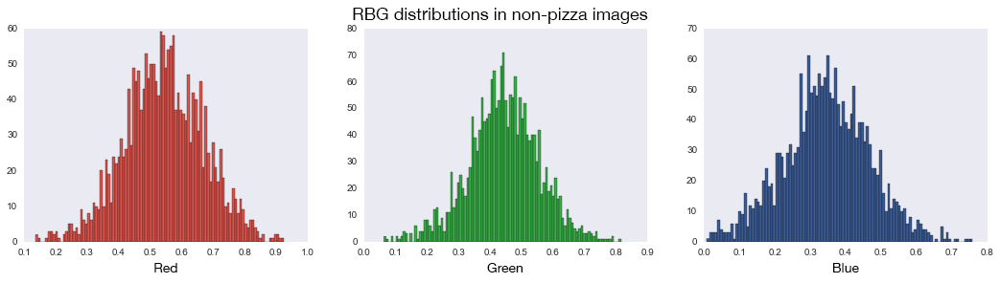
HSV color space
I also looked at another color space — HSV which stands for hue, saturation, and value — also called HSB (B for brightness). Because HSV separates color (hue) information from intensity (saturation) and lighting (value) it's often used because the information is less noisy than RGB information (since most of the noise is from differences in light). An example of what this color space looks like: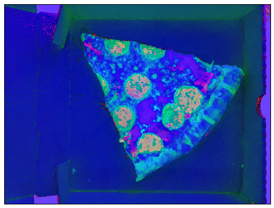
Along the same lines as the red, green, and blue color exploration above, I compared the hue, saturation, and brightness in pizza versus non pizza images to see if there are any differences — and like before, there is really no difference.
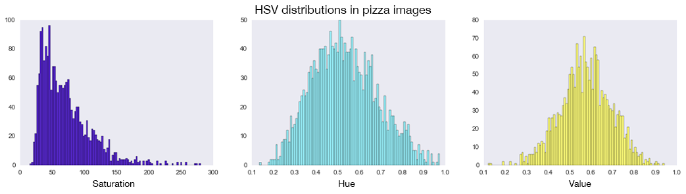
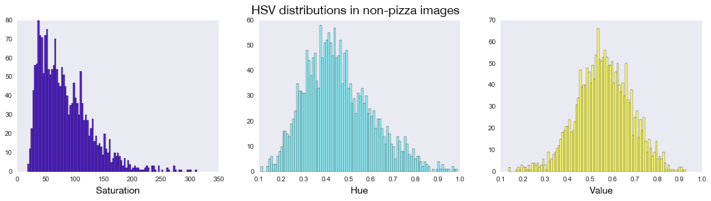
Overall the EDA, albeit pretty surface level, conveys that recognizing objects in images based on pixels, essentially imitating the highly granular functionality of the human eye and brain, can't really be based on something as simple as color alone and supports the use of a more complex modeling technique.
Image Preprocessing
The goal of this preprocessing is to apply random transformations to the images so the model can "learn" instead of purely memorizing the pixels in the images. For example, if the model only saw images of pizza with the crust oriented left, the model may not be able to properly detect images of pizza with the crust oriented right.
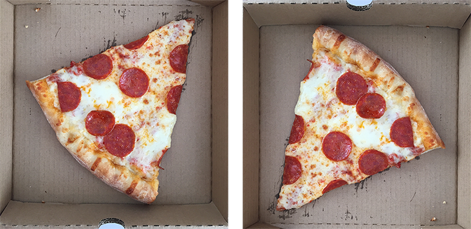
Doing this allows the model to account for natural variation in orientation, rotation, perspective, etc in the images by randomly flipping and rotating the images during the model's learning phase. Below is an example of what these transformations look like.

Model
Recognizing pizza in an image is difficult because the same object can vary in position, angles, lighting, etc. Part of the image can be hidden as well as there is background clutter to deal with. With all this information being represented in the image, using more simple modeling techniques that look at individual pixels as features in isolation won't work.
What you really need to recognize pizza an image is a way to understand and retain the information on the relationship between pixels in a more flexible way. A convolutional neural network (CNN) matches small parts of the image, over and over again, to in effect create a library of all the possible distinctive features that make up pizza in a way that's independent of the object's/pizza's orientation in space.
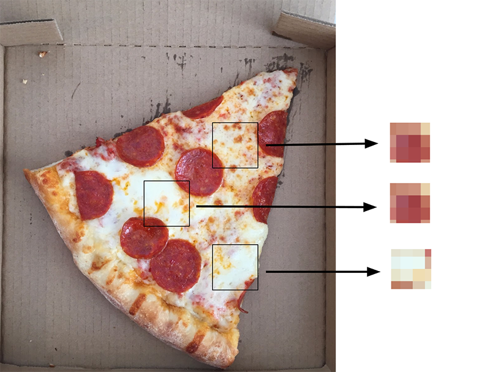
The whole process can be visualized as a series of steps (really a stack of layers) that are repeated many times. For the sake of simplicity, the convolutional layer essentially creates many snapshots of the different possible key features in identifying pizza. There's an intermediary layer (ReLU) that performs a mathematical operation that keeps the feature’s voting strength on an appropriate scale. The pooling layer takes the many possible features created in the convolutional layers and shrinks them down to only the most significant features. The final step (layer) is the voting step, where key features in the image vote to determine whether the image contains pizza.
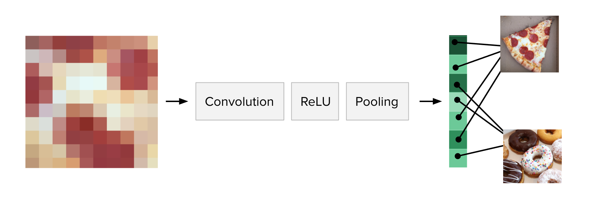
Results
The model is able to detect pizza in the test/validation images with 88% accuracy which is pretty decent considering the relatively small amount of images the model is trained on.
The learning process
Something interesting to note with neural networks is that they are trained over many "epochs" which are essentially learning cycles. More specifically, when the neural network is initially presented with an image it makes a random guess as to whether or not it is an image of pizza. It then sees how far its answer was from the actual one and makes the appropriate adjustments to the network/model. This process can be visualized in the plots below, where the accuracy increases after each epoch while the loss (error) decreases. The sharp jump around epoch 50 is where the model made a large error (for example, misjudged a non pizza image for pizza).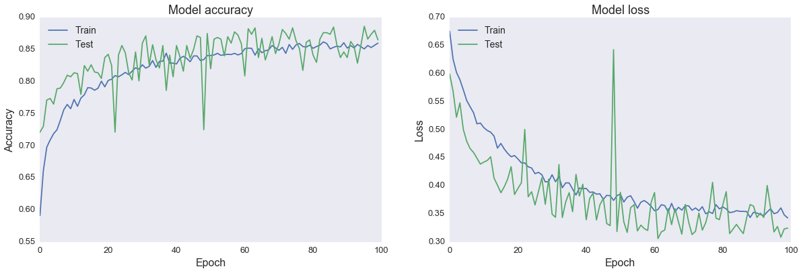
ROC curve
The ROC curve is a fairly standard plot that illustrates the ability of a model to separate two classes. This plot shows when the actual class is pizza, how often does the model predict pizza (y-axis) versus when the actual class is not pizza, how often does the model incorrectly predict pizza (x-axis). A model that does a good job separating classes will have a curve that hugs the upper left corner — meaning the ratio of often the model is right vs wrong is better than simply guessing.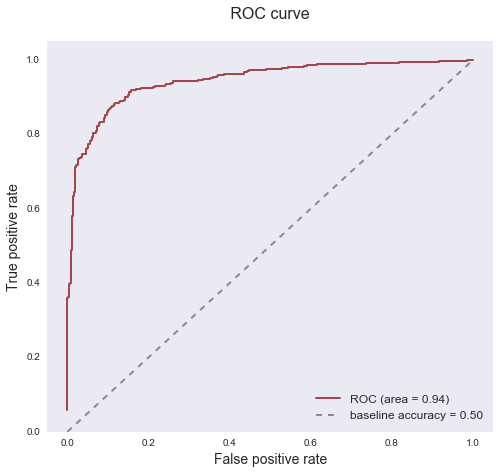
Misclassified vs most "pizza" images
Below are images the model predicted with the highest probability to be pizza but that are in fact not pizza, as well as images the model predicted with the highest probability to be pizza and are actually pizza. Some of the misclassified images are a bit perplexing (the donuts) as to why the model may have labeled them pizza but others (far right in worst pizza predictions... some sort of meat topping?) are more understandable in their potential "pizza" resemblance. The images the model predicted with the highest probability to be pizza and are pizza are fairly canonical pizza images and it's cool that the model can even detect uncooked pizza (far right image in best pizza predictions).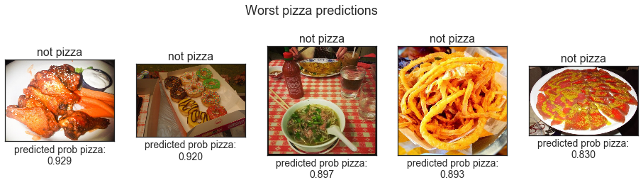
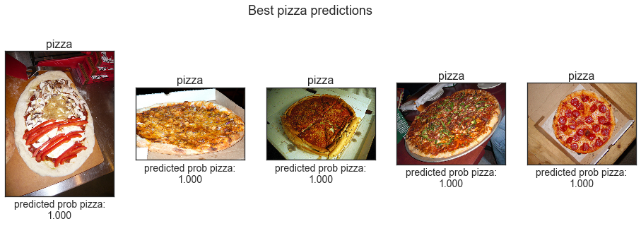
Summary
Convolutional neural networks are the best way to solve this problem. Attempting to build a pizza detector with simpler modeling methods would be very challenging. Overall, the model performs well with 88% accuracy in detecting pizza in an image. I could continue to tune the model layers and/or make tweaks to the random transformations to see what improvements I can make.
I suspect there is some overfitting (ie the model is memorizing to some extent) because my pool of images is rather small. Ideally, I'd like to train the model on hundreds of thousands of photos. But in practice, I don't think this is necessarily a good learning exercise as pre-trained models exist, which have been trained on literally millions of images. Another area of improvement is a more comprehensive exploration of the images as a dataset — aspects to explore in the image data are expanding on color (ie variance in color), texture, shape, etc. Visualizing what features the network is identifying as important in detecting pizza would also be interesting. I'd also like to expand on the results section, for example, looking at misclassified images to try to discover patterns there.
In terms of next steps — I would like to expand on this and explore building the image-based calorie predictor. I think using a pre-trained model is the only feasible way to go about this. From there, other issues such as estimating food quantity in the image is another challenge to figure out.